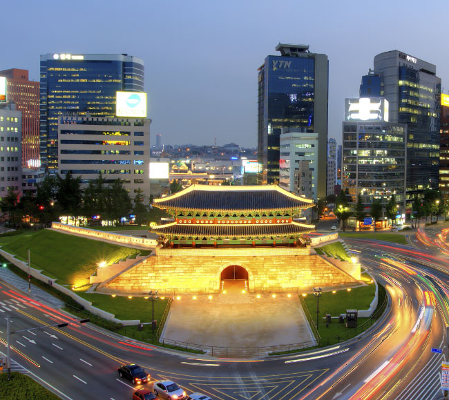
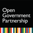
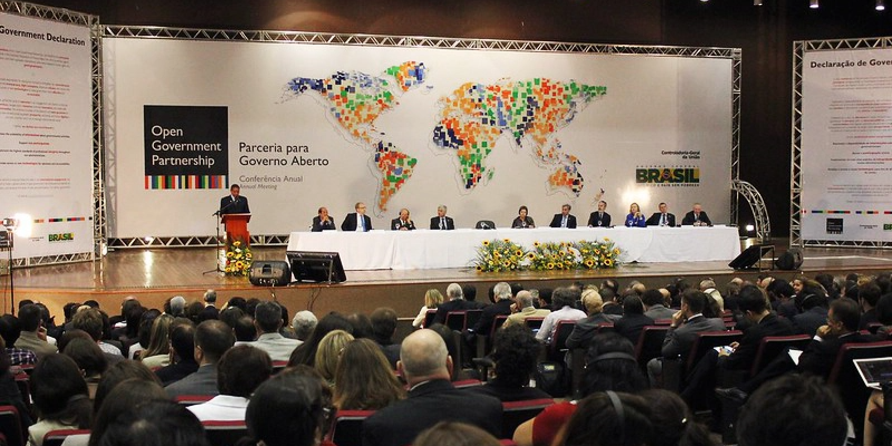
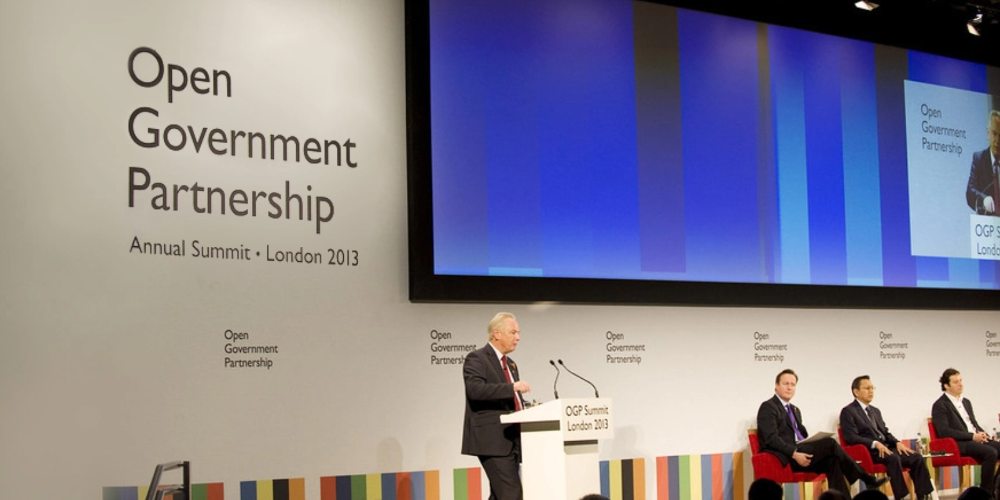
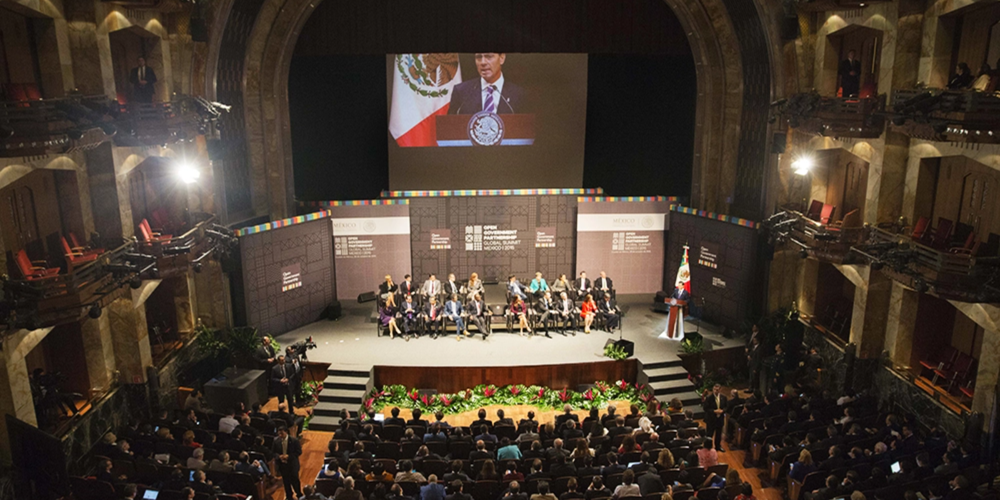
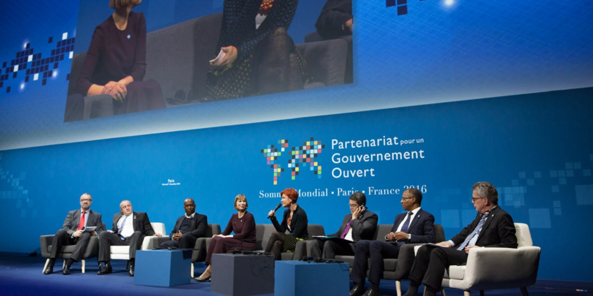
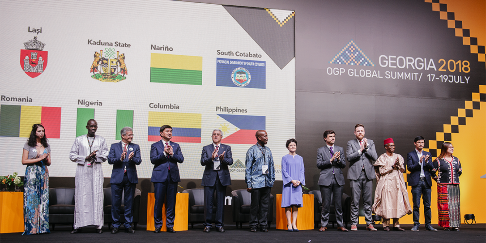
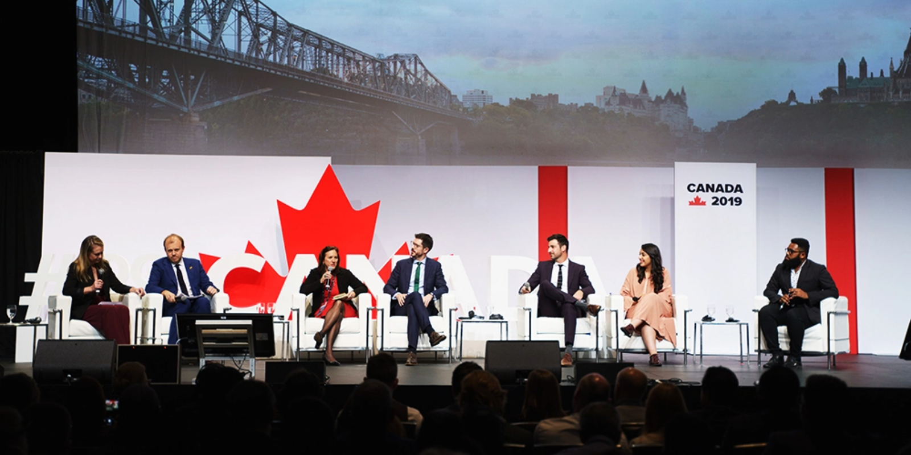
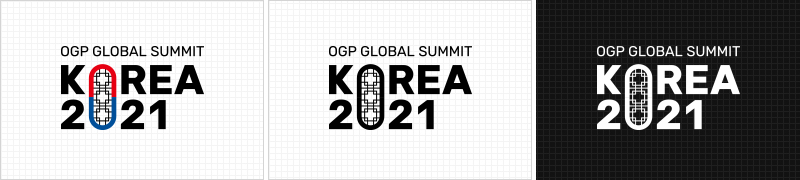
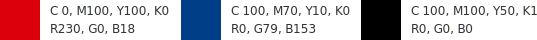

2021 열린정부파트너십(OGP) 글로벌서밋이
2021년 12월 15일 ~ 17일
대한민국 서울에서 개최됩니다.
OGP 설립 10주년을 맞아 열린정부와 민주주의를 위해 보다 강력한 국제적 연대를 이루고
열린정부 가치에 대한 약속을 재확인하는 의미있는 자리가 될 것입니다.

- 행사명
- 2021 열린정부파트너십(OGP) 글로벌서밋
- 일자/장소
- 2021. 12. 15. ~ 12. 17 (3일간) / 서울 코엑스
- 대상
- 78개 회원국 정상·장관급 인사 및 시민단체
- 주제
- 시민영역·국민참여 강화, 반부패, 포용적 디지털 혁신
- 프로그램
- 개회식, 주제별 전체회의, 주제별 분과회의, 대륙별 회의, 특별세션 등
- 개최방법
- 온·오프라인 병행
- 주최
- 
2021년 대한민국 정부와 시민사회의장은
열린정부가치를 기반으로
팬데믹 위기로부터 포용적 회복을 이루고
더 나은 세상을 열어가는
열린도약(Open Renewal)을 위해
시민영역∙국민참여강화,
반부패, 포용적 디지털 혁신의
3대 비전을 마련하였습니다.
이번 글로벌서밋은 이러한 3대 비전의 실천과 성과를 논의하는 자리가 될 것입니다.
역대 OGP 글로벌서밋
2012 OGP
글로벌서밋

- 일자
- 2012. 04. 17 ~ 04. 18
- 개최지
- 브라질 (브라질리아)
- 주제
- 정보 접근성, 공공서비스, 데이터 개방, 재정 투명성 등
- 참석 규모
- 정상 3명, 장관 12명 등 400명 이상
2013 OGP
글로벌서밋

- 일자
- 2013. 10. 31 ~ 11. 01
- 개최지
- 영국 (런던)
- 주제
- 데이터 개방, 정부 청렴성, 재정 투명성, 시민역량 강화, 천연자원 사용의 투명성
- 참석 규모
- 정상 3명, 장관 30명 등 1,500명 이상
2015 OGP
글로벌서밋

- 일자
- 2015. 10. 27 ~ 10. 29
- 개최지
- 멕시코 (멕시코시티)
- 주제
- 정보공개, 사법 접근성, 시민영역 등 11개 주제
- 참석 규모
- 정상 3명, 장관 41명 등 2,000명 이상
2016 OGP
글로벌서밋

- 일자
- 2016. 12. 07 ~ 12. 09
- 개최지
- 프랑스 (파리)
- 주제
- 시빅테크, 열린국회, 디지털·개발 등 12개 주제
- 참석 규모
- 정상 3명, 장관 70명, 13개 지자체장 등 2,500명 이상
2018 OGP
글로벌서밋

- 일자
- 2018. 07. 17 ~ 07. 19
- 개최지
- 조지아 (트빌리시)
- 주제
- 국민참여, 반부패, 공공서비스 이행
- 참석 규모
- 정상 5명, 장관 54명, 10개 지자체장 등 2,270명 이상
2019 OGP
글로벌서밋

- 일자
- 2019. 05. 29 ~ 05. 31
- 개최지
- 캐나다 (오타와)
- 주제
- 참여, 개방, 포용, 성과
- 참석 규모
- 정상 1명, 장관·고위급 80명 등 2,600명 이상
상징(BI)
우리 전통 상징인 창호(窓戶)를 모티브로 구현한 앰블럼은
‘초대’라는 의미와 함께 ‘미래를 여는 문’, ‘세상을 보는 문’이라는 의미를 담고 있습니다.
국민과 정부, 대한민국과 세계를 하나로 연결하여 새로운 열린 공간으로 안내하고
열린정부파트너십(OGP)이 추구하는 참여와 공유, 개방의 가치를 함께 향유하는 의미로 재해석하였습니다.


엠블럼 다운받기다운로드